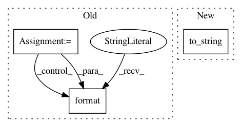

b0ad8540b0aafd020da4d524399edf7fd58a35fe,qcengine/programs/molpro.py,MolproHarness,build_input,#MolproHarness#Any#Any#Any#,95
Before Change
// FIXME Molpro takes xyz input in Angstrom by default, but MolSSI stores xyz in bohr
// - Either need to convert to Angstrom or change Molpro input to read bohr
input_file.append("geometry={")
for sym, geom in zip(input_model.molecule.symbols, input_model.molecule.geometry):
s = "{:<4s} {:>{width}.{prec}f} {:>{width}.{prec}f} {:>{width}.{prec}f}".format(
sym, *geom, width=14, prec=10)
input_file.append(s)
input_file.append("}")
// Write charge and multiplicity
input_file.append("set,charge={}".format(input_model.molecule.molecular_charge))
After Change
input_file.append("")
// Write the geom
xyz_file = input_model.molecule.to_string(dtype="molpro", units="Bohr")
input_file.append(xyz_file)
// Write charge and multiplicity
input_file.append("set,charge={}".format(input_model.molecule.molecular_charge))
In pattern: SUPERPATTERN
Frequency: 3
Non-data size: 3
Instances
Project Name: MolSSI/QCEngine
Commit Name: b0ad8540b0aafd020da4d524399edf7fd58a35fe
Time: 2019-06-13
Author: sjrl423@gmail.com
File Name: qcengine/programs/molpro.py
Class Name: MolproHarness
Method Name: build_input
Project Name: azavea/raster-vision
Commit Name: 09fdab7c501105b31a5661e6f11fb8a6f8817158
Time: 2018-10-02
Author: rdemanuele@gmail.com
File Name: src/rastervision/runner/experiment_runner.py
Class Name: ExperimentRunner
Method Name: run
Project Name: MolSSI/QCEngine
Commit Name: 87f7be63c046e44fd896516b8869a086686f2e32
Time: 2019-06-03
Author: sjrl423@gmail.com
File Name: qcengine/programs/entos.py
Class Name: EntosExecutor
Method Name: build_input